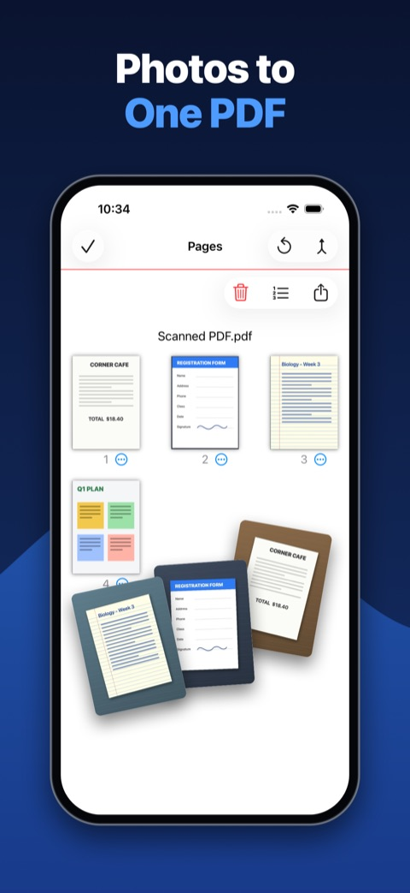

Merge PDFs on your iPhone and iPad
PDF Merge puts PDFs, photos and paper scans together into one clean file. You pick the page order, and nothing is uploaded to a website.
Download on the App Store Free to download. Premium unlocks unlimited merging, scanning, editing and sharing.


What you can do
- Merge: combine several PDFs into one file, then drag pages into the order you want.
- Split: pull out, duplicate or remove single pages.
- Photos to PDF: turn photos and images into a PDF, and turn PDF pages back into images.
- Scan: use the camera as a document scanner. Edges are found for you.
- Fill, sign and mark up: fill in forms, add a signature, text, notes and drawings.
- Private: works offline, and you can lock documents with a password.
- Open files from anywhere: iCloud Drive, Google Drive, Dropbox and OneDrive.
Step-by-step guides
- How to merge PDF files on iPhoneTwo ways: the free Files app method, and how to choose the page order.
- How to turn photos into a PDF on iPhoneMake one PDF from receipts, notes or ID photos.
- How to scan a document to PDF on iPhoneScan paper with the camera and add it to an existing PDF.
- How to split a PDF or extract pages on iPhoneSave only the pages you need as a new file.
Why not an online PDF website?
Online merge tools ask you to upload your files to their server. That is fine for a flyer, but not ideal for a bank statement, contract or ID. PDF Merge does the work on your device, even with no internet connection.